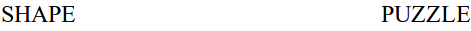

For each image that appears in the center of the screen, quickly decide if the image is a shape or a puzzle piece. If the image is a SHAPE, press the E key. If the image is a PUZZLE piece, press the I key.

Press the I key, now, because the image is a PUZZLE piece.